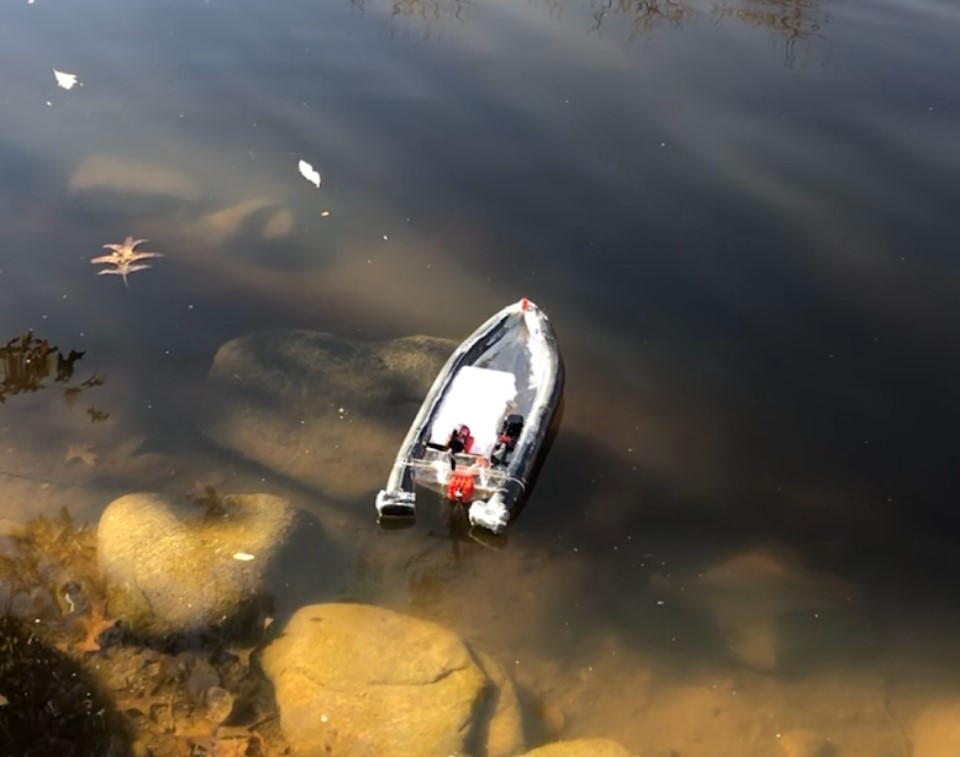
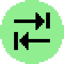
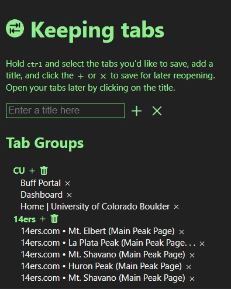
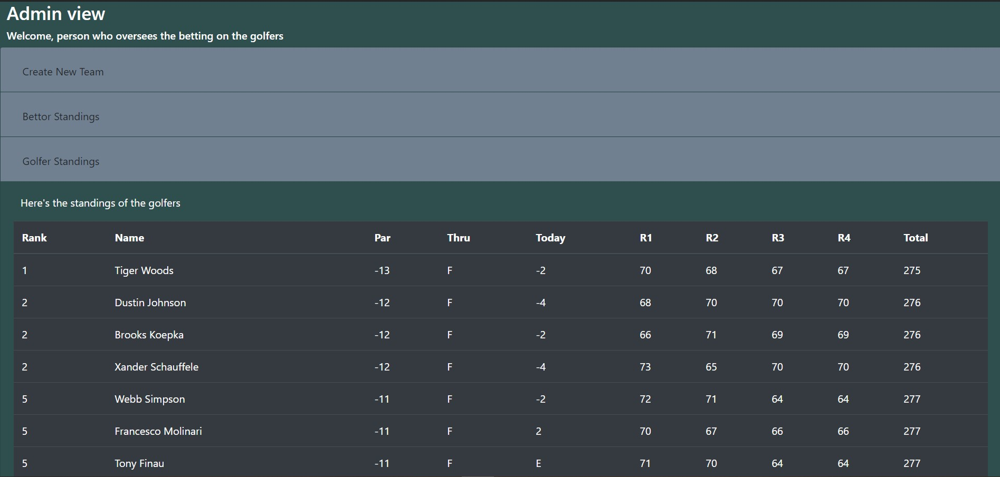
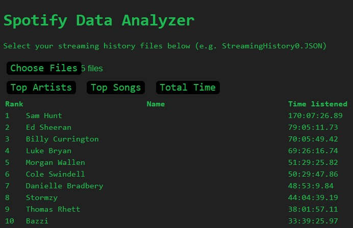

For my engineering projects class in the fall of 2020, I worked with
a team of other first-year engineers to build an Arduino-based project.
We settled on a depth-sensing boat, with a goal of mapping the bottom of Kittredge Pond.
During the project, I was primarily responsible for the control systems
and the CAD modeling. I spent a lot of time setting up an desktop
application that would allow the user to drive the boat with their keyboard,
and after that I focused on making sure that the bluetooth connection
and all of the motors worked as they were meant to. My teammates
worked on building the boat and designing a sensing assembly for
it to lower into the water.
I very much enjoyed working on this project. I had a great team,
and although we struggled to work together in the beginning, we had
figured out how to play off each other's strengths by the end of the
semester. I learned a lot about working as a team and project management.
Although we didn't get the boat to map the bottom of Kitt Pond, we
were fairly certain that with another two weeks of in-person classes,
we could have gotten it to work. For a full write-up, click here.


Keeping Tabs — Spring 2020
Keeping Tabs is a chrome extension I built to simplify tab management.
Frequently when doing research or doing homework, I'd end up with a
group of tabs I didn't want to close yet, but I needed out of the way
so I could work on something else.
With Keeping Tabs, I can save all of those websites and Google searches
off to the side, leaving less room for distractions. Just hold
ctrl, click the tabs you want to save, and add them to a
tab group for easy reopening.
I've really enjoyed working on this project, and I find it
extremely useful to me personally. It's given me some insight into
publishing an application for the public, and updating it when bugs
come up. I'm still working on improving Keeping Tabs, and adding
features to make it more useful.
Check it out on the Chrome Store here

As an extracurricular activity for my AP Computer Science A class, I
was tasked with creating a digital hall pass for my high school. The
goal was to solve the problem of students leaving class too frequently
or for too long. This project taught me a lot, from Scrum methodologies
to pitching a product to administrators. I also learned a lot of new
languages and technologies, most of which I had no previous experience with.
I created a user interface using HTML, CSS, and JavaScript, and then
had to learn how to implement a backend for storing and retrieving data.
When the product was finished, staff members were able to login, see
the students on their rosters, and issue passes. These passes had varying
types, lengths, and permissions. Once a pass was issued, students could
then login on their devices, claim the pass, and use it until it
expired at a set time.
This was my first big web development project, and I learned a lot.
I used MySQL and PHP, both of which I had absolutely no previous
experience with. I also got a better grasp on JavaScript,
DOM manipulation, and CDNs. We presented this project at a Project
Lead The Way event at Lockheed Martin in February 2020.
After completing the Hall Pass website, my next project was building
a website that could get data about the PGA Masters tournament, and
use it in a fantasy league. One of my teachers had a group of friends
that would bet on the Masters tournament each year, but one woman
would have to take on the collection of the scores and figuring out
who was winning, week after week. So I created a website that would
do it automatically for her.
I started with a Python webscraper that pulled data from the PGA website,
parsed it, and sent it to a MySQL database. I then designed a webpage
that would allow users to create a team of golfers, and enter the
competition. When data was collected from the tournament, the website
would display the scores of the teams, and show who was winning the
betting pool.
This was my first experience in designing software with specifications
from a third party, and it was fun to have a customer to work with.
I enjoyed this project, and it gave me a great opportunity to build
upon what I had learned in the hall pass project, as well as learn
more about webscraping and backend code with Python.

At the end of each year, Spotify has a tool called Spotify Wrapped
that shows you your most played songs and albums, as well as how much
music you listened to during the year. I discovered that I could
request my listening data from Spotify, so I built
this tool to see my most played artists and songs, along with other
interesting statistics about my listening history.
You can check it out here
